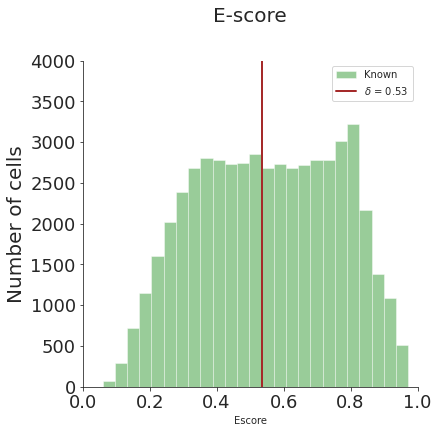
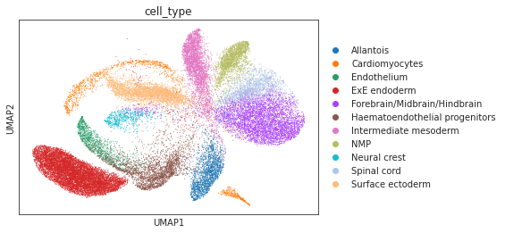
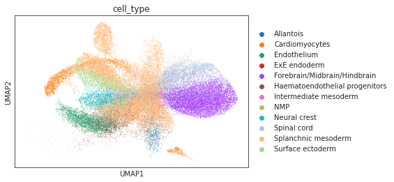
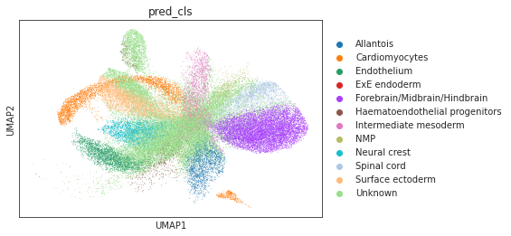
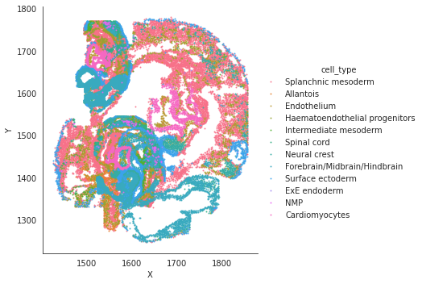
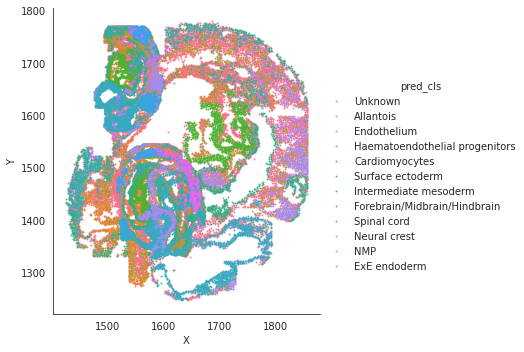

Tutorial 2
Annotate and evaluate seqfish data with novel cell detection.
[1]:
import torch
import scanpy as sc
import pandas as pd
import numpy as np
# read h5ad rna/seqfish data
device = torch.device('cuda:2')
adata_rna = sc.read_h5ad('/data/msyuan/Cross-omics-Annotator/SPANN_Package/sample_data/adata_rna.h5ad')
adata_seqfish = sc.read_h5ad('/data/msyuan/Cross-omics-Annotator/SPANN_Package/sample_data/adata_seqfish_40.h5ad')
# compute common cell type and novel cell type
common_cell_type = [i for i in np.unique(adata_rna.obs['cell_type']) if i in np.unique(adata_seqfish.obs['cell_type'])]
novel_cell_type = [i for i in np.unique(adata_seqfish.obs['cell_type']) if i not in np.unique(adata_rna.obs['cell_type'])]
cell_types = common_cell_type + novel_cell_type
[2]:
# preprocess to get torch datasets and dataloaders
from preprocess import *
adata_cm, adata_spa, adata_rna = anndata_preprocess(adata_seqfish, adata_rna, spatial_labels=True)
source_sp_ds,target_sp_ds,source_cm_dl,target_cm_dl,test_source_cm_dl,test_target_cm_dl = generate_dataloaders(adata_cm,adata_spa,adata_rna)
/data/msyuan/anaconda3/lib/python3.7/site-packages/anndata/_core/anndata.py:1785: FutureWarning: X.dtype being converted to np.float32 from float64. In the next version of anndata (0.9) conversion will not be automatic. Pass dtype explicitly to avoid this warning. Pass `AnnData(X, dtype=X.dtype, ...)` to get the future behavour.
[AnnData(sparse.csr_matrix(a.shape), obs=a.obs) for a in all_adatas],
rna_labels: [ 0 1 2 3 4 5 6 7 8 9 10]
spatial_labels: [ 0 1 2 3 4 5 6 7 8 9 10 11 12 13 14 15 16 17 18 19 20 21 22]
[3]:
# contruct SPANN model
from model import *
enc,dec,x_dim,z_dim = generate_ae_params(adata_cm, adata_spa, adata_rna)
spann = SPANN_model(x_dim, z_dim, enc, dec, class_num=len(adata_rna.obs['cell_type'].unique()), device=device)
[easydl] tensorflow not available!
[5]:
# train SPANN model with validation
source_sp_ds,target_sp_ds,source_cm_dl,target_cm_dl,\
test_source_cm_dl,test_target_cm_dl = generate_dataloaders(adata_cm,adata_spa,adata_rna,batch_size=256)
adata_source, adata_target, threshold_test = spann.train_eval(source_cm_dl,target_cm_dl,source_sp_ds,target_sp_ds,adata_spa.obs[["X","Y"]],
test_source_cm_dl, test_target_cm_dl,np.array(adata_rna.obs['labels']),
np.array(adata_seqfish.obs['labels']),cell_types, common_cell_type,
lr=2e-4,resolution=0.5,lambda_spa=0.001,lambda_cd=0.0001,lambda_nb=10,
maxiter=5000,miditer1=2000,miditer2=4000,miditer3=4000)
#Iter 100: Reconstruction loss: 2.257686, KL loss: 88.931099, CLS loss: 1.407960, Spatial loss: 0.000000, CCD loss: 0.000000, Neighbor loss: 0.000000
#Iter 200: Reconstruction loss: 2.172615, KL loss: 84.677094, CLS loss: 1.368390, Spatial loss: 0.000000, CCD loss: 0.000000, Neighbor loss: 0.000000
#Iter 300: Reconstruction loss: 2.154573, KL loss: 66.177856, CLS loss: 1.151969, Spatial loss: 0.000000, CCD loss: 0.000000, Neighbor loss: 0.000000
#Iter 400: Reconstruction loss: 2.112775, KL loss: 82.911514, CLS loss: 1.001163, Spatial loss: 0.000000, CCD loss: 0.000000, Neighbor loss: 0.000000
#Iter 500: Reconstruction loss: 2.070595, KL loss: 96.194229, CLS loss: 1.123448, Spatial loss: 0.000000, CCD loss: 0.000000, Neighbor loss: 0.000000
#Iter 600: Reconstruction loss: 2.040261, KL loss: 77.606903, CLS loss: 0.955164, Spatial loss: 0.000000, CCD loss: 0.000000, Neighbor loss: 0.000000
#Iter 700: Reconstruction loss: 2.024984, KL loss: 71.032997, CLS loss: 0.848757, Spatial loss: 0.000000, CCD loss: 0.000000, Neighbor loss: 0.000000
#Iter 800: Reconstruction loss: 1.968870, KL loss: 122.824310, CLS loss: 0.852159, Spatial loss: 0.000000, CCD loss: 0.000000, Neighbor loss: 0.000000
#Iter 900: Reconstruction loss: 1.953092, KL loss: 69.681557, CLS loss: 0.855027, Spatial loss: 0.000000, CCD loss: 0.000000, Neighbor loss: 0.000000
#Iter 1000: Reconstruction loss: 1.906885, KL loss: 94.366272, CLS loss: 0.808961, Spatial loss: 0.000000, CCD loss: 0.000000, Neighbor loss: 0.000000
#Iter 1000: (OT) Source acc: 0.663299, Target total acc : 0.436768, Target known acc: 0.322618, Target unknown acc: 0.583333
#Iter 1000: (CLS) Source acc: 0.813258, Target total acc : 0.454992, Target known acc: 0.355035, Target unknown acc: 0.583333
#Iter 1100: Reconstruction loss: 1.895180, KL loss: 73.712250, CLS loss: 0.817177, Spatial loss: 0.000000, CCD loss: 0.000000, Neighbor loss: 0.000000
#Iter 1200: Reconstruction loss: 1.863576, KL loss: 107.641220, CLS loss: 0.797180, Spatial loss: 0.000000, CCD loss: 0.000000, Neighbor loss: 0.000000
#Iter 1300: Reconstruction loss: 1.839807, KL loss: 68.173500, CLS loss: 0.746627, Spatial loss: 0.000000, CCD loss: 0.000000, Neighbor loss: 0.000000
#Iter 1400: Reconstruction loss: 1.820494, KL loss: 65.724258, CLS loss: 0.780028, Spatial loss: 0.000000, CCD loss: 0.000000, Neighbor loss: 0.000000
#Iter 1500: Reconstruction loss: 1.804505, KL loss: 75.078613, CLS loss: 0.736572, Spatial loss: 0.000000, CCD loss: 0.000000, Neighbor loss: 0.000000
#Iter 1600: Reconstruction loss: 1.772642, KL loss: 77.683929, CLS loss: 0.737965, Spatial loss: 0.000000, CCD loss: 0.000000, Neighbor loss: 0.000000
#Iter 1700: Reconstruction loss: 1.743996, KL loss: 71.540802, CLS loss: 0.699358, Spatial loss: 0.000000, CCD loss: 0.000000, Neighbor loss: 0.000000
#Iter 1800: Reconstruction loss: 1.714818, KL loss: 64.760529, CLS loss: 0.716692, Spatial loss: 0.000000, CCD loss: 0.000000, Neighbor loss: 0.000000
#Iter 1900: Reconstruction loss: 1.701483, KL loss: 54.652596, CLS loss: 0.685873, Spatial loss: 0.000000, CCD loss: 0.000000, Neighbor loss: 0.000000
#Iter 2000: Reconstruction loss: 1.670551, KL loss: 66.151764, CLS loss: 0.707537, Spatial loss: 0.000000, CCD loss: 0.000000, Neighbor loss: 0.000000
bimodality of dip test: 0.0 True
bimodality coefficient:(>0.45 indicates bimodality) 0.46443246918379927 True
ood sample exists: True
#Iter 2000: (OT) Source acc: 0.743099, Target total acc : 0.495682, Target known acc: 0.404338, Target unknown acc: 0.612965
#Iter 2000: (CLS) Source acc: 0.891891, Target total acc : 0.523836, Target known acc: 0.454419, Target unknown acc: 0.612965
#Iter 2100: Reconstruction loss: 1.644037, KL loss: 63.773457, CLS loss: 0.694243, Spatial loss: 0.000000, CCD loss: 0.160879, Neighbor loss: 0.000000
#Iter 2200: Reconstruction loss: 1.632180, KL loss: 50.760124, CLS loss: 0.669578, Spatial loss: 0.000000, CCD loss: 0.141688, Neighbor loss: 0.000000
#Iter 2300: Reconstruction loss: 1.610084, KL loss: 61.126312, CLS loss: 0.659221, Spatial loss: 0.000000, CCD loss: 0.146395, Neighbor loss: 0.000000
#Iter 2400: Reconstruction loss: 1.587267, KL loss: 52.716446, CLS loss: 0.658956, Spatial loss: 0.000000, CCD loss: 0.140904, Neighbor loss: 0.000000
#Iter 2500: Reconstruction loss: 1.566891, KL loss: 47.894150, CLS loss: 0.640157, Spatial loss: 0.000000, CCD loss: 0.178457, Neighbor loss: 0.000000
#Iter 2600: Reconstruction loss: 1.552428, KL loss: 46.742100, CLS loss: 0.751346, Spatial loss: 0.000000, CCD loss: 0.137058, Neighbor loss: 0.000000
#Iter 2700: Reconstruction loss: 1.529993, KL loss: 50.279877, CLS loss: 0.644891, Spatial loss: 0.000000, CCD loss: 0.160339, Neighbor loss: 0.000000
#Iter 2800: Reconstruction loss: 1.509751, KL loss: 47.251438, CLS loss: 0.651166, Spatial loss: 0.000000, CCD loss: 0.166110, Neighbor loss: 0.000000
#Iter 2900: Reconstruction loss: 1.484797, KL loss: 46.562714, CLS loss: 0.656598, Spatial loss: 0.000000, CCD loss: 0.175103, Neighbor loss: 0.000000
#Iter 3000: Reconstruction loss: 1.465344, KL loss: 45.252800, CLS loss: 0.676531, Spatial loss: 0.000000, CCD loss: 0.198717, Neighbor loss: 0.000000
#Iter 3000: (OT) Source acc: 0.769075, Target total acc : 0.538845, Target known acc: 0.560876, Target unknown acc: 0.510558
#Iter 3000: (CLS) Source acc: 0.940403, Target total acc : 0.544305, Target known acc: 0.570587, Target unknown acc: 0.510558
#Iter 3100: Reconstruction loss: 1.452382, KL loss: 45.104759, CLS loss: 0.690969, Spatial loss: 0.000000, CCD loss: 0.156519, Neighbor loss: 0.000000
#Iter 3200: Reconstruction loss: 1.428560, KL loss: 45.302284, CLS loss: 0.684445, Spatial loss: 0.000000, CCD loss: 0.181313, Neighbor loss: 0.000000
#Iter 3300: Reconstruction loss: 1.412535, KL loss: 44.058933, CLS loss: 0.607947, Spatial loss: 0.000000, CCD loss: 0.139485, Neighbor loss: 0.000000
#Iter 3400: Reconstruction loss: 1.392807, KL loss: 43.962734, CLS loss: 0.631591, Spatial loss: 0.000000, CCD loss: 0.171614, Neighbor loss: 0.000000
#Iter 3500: Reconstruction loss: 1.376284, KL loss: 43.112522, CLS loss: 0.631574, Spatial loss: 0.000000, CCD loss: 0.162500, Neighbor loss: 0.000000
#Iter 3600: Reconstruction loss: 1.360546, KL loss: 43.177277, CLS loss: 0.647153, Spatial loss: 0.000000, CCD loss: 0.186452, Neighbor loss: 0.000000
#Iter 3700: Reconstruction loss: 1.344566, KL loss: 42.795448, CLS loss: 0.685017, Spatial loss: 0.000000, CCD loss: 0.216996, Neighbor loss: 0.000000
#Iter 3800: Reconstruction loss: 1.328546, KL loss: 41.278133, CLS loss: 0.632294, Spatial loss: 0.000000, CCD loss: 0.135869, Neighbor loss: 0.000000
#Iter 3900: Reconstruction loss: 1.309519, KL loss: 41.314407, CLS loss: 0.637732, Spatial loss: 0.000000, CCD loss: 0.158877, Neighbor loss: 0.000000
#Iter 4000: Reconstruction loss: 1.297361, KL loss: 40.404591, CLS loss: 0.658705, Spatial loss: 0.000000, CCD loss: 0.176073, Neighbor loss: 0.000000
#Iter 4000: (OT) Source acc: 0.764224, Target total acc : 0.587544, Target known acc: 0.570283, Target unknown acc: 0.609706
#Iter 4000: (CLS) Source acc: 0.937487, Target total acc : 0.592965, Target known acc: 0.579927, Target unknown acc: 0.609706
#Iter 4100: Reconstruction loss: 1.280080, KL loss: 40.474228, CLS loss: 0.588519, Spatial loss: 0.083794, CCD loss: 0.186073, Neighbor loss: 0.009464
#Iter 4200: Reconstruction loss: 1.264715, KL loss: 39.442574, CLS loss: 0.643651, Spatial loss: 0.072263, CCD loss: 0.162462, Neighbor loss: 0.008904
#Iter 4300: Reconstruction loss: 1.250771, KL loss: 38.269913, CLS loss: 0.658527, Spatial loss: 0.086311, CCD loss: 0.170264, Neighbor loss: 0.009088
#Iter 4400: Reconstruction loss: 1.235176, KL loss: 37.521111, CLS loss: 0.646436, Spatial loss: 0.072197, CCD loss: 0.161221, Neighbor loss: 0.009002
#Iter 4500: Reconstruction loss: 1.222993, KL loss: 37.245354, CLS loss: 0.665024, Spatial loss: 0.079820, CCD loss: 0.198918, Neighbor loss: 0.010810
#Iter 4600: Reconstruction loss: 1.209288, KL loss: 36.854118, CLS loss: 0.668148, Spatial loss: 0.077400, CCD loss: 0.159441, Neighbor loss: 0.008644
#Iter 4700: Reconstruction loss: 1.196794, KL loss: 36.337120, CLS loss: 0.646858, Spatial loss: 0.078992, CCD loss: 0.204889, Neighbor loss: 0.006824
#Iter 4800: Reconstruction loss: 1.181943, KL loss: 35.322384, CLS loss: 0.626009, Spatial loss: 0.085399, CCD loss: 0.231927, Neighbor loss: 0.008081
#Iter 4900: Reconstruction loss: 1.169745, KL loss: 34.970551, CLS loss: 0.639672, Spatial loss: 0.077415, CCD loss: 0.172733, Neighbor loss: 0.010397
#Iter 5000: Reconstruction loss: 1.154006, KL loss: 34.661934, CLS loss: 0.652082, Spatial loss: 0.087333, CCD loss: 0.178229, Neighbor loss: 0.008427
#Iter 5000: (OT) Source acc: 0.772237, Target total acc : 0.645488, Target known acc: 0.618334, Target unknown acc: 0.680353
#Iter 5000: (CLS) Source acc: 0.944456, Target total acc : 0.654238, Target known acc: 0.633900, Target unknown acc: 0.680353
#Iter 5100: Reconstruction loss: 1.145890, KL loss: 34.078972, CLS loss: 0.641034, Spatial loss: 0.083072, CCD loss: 0.170831, Neighbor loss: 0.010245
[6]:
# distribution plot
from functions import *
dist_fig = distribution_plot(adata_target.obs['Escore'], threshold_test, bins=25, ylim=4000)
WARNING:matplotlib.font_manager:findfont: Font family ['Arial'] not found. Falling back to DejaVu Sans.

[8]:
# umap visualizations
# umap plot colored by source and cell types
adata_total = sc.AnnData.concatenate(adata_source, adata_target)
sc.pp.neighbors(adata_total, use_rep="X")
sc.tl.umap(adata_total)
sc.pl.umap(adata_total, color="source", show=True)
sc.pl.umap(adata_total[adata_total.obs['source']=='scRNA'], color="cell_type", show=True)
sc.pl.umap(adata_total[adata_total.obs['source']=='Spatial'], color="cell_type", show=True)
sc.pl.umap(adata_total[adata_total.obs['source']=='Spatial'], color="pred_cls", show=True)



[9]:
# spatial plot
import seaborn as sns
sns.lmplot(data=adata_target.obs, x='X', y='Y',hue='cell_type',fit_reg=False, legend=True, legend_out=True, scatter_kws={"s": 1})
sns.lmplot(data=adata_target.obs, x='X', y='Y',hue='pred_cls',fit_reg=False, legend=True, legend_out=True, scatter_kws={"s": 1})
[9]:
<seaborn.axisgrid.FacetGrid at 0x7fd1ec14ec90>

